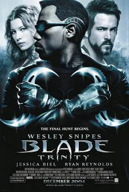

The genetics
The heroes' weapon is genetic. Sommerfield, the Nightstalkers' scientist, has engineered Daystar, an experimental viral bioweapon designed to kill vampires at the genetic level; to work against the whole species it needs blood from Drake, the first vampire, whose DNA is pure and uncontaminated, which is also why he can walk in sunlight. Her recorded warning that the virus could kill Blade, a human-vampire hybrid, too, adds risk to the final confrontation. Unlike most films with engineered viruses, the bioweapon here is the instrument of salvation: it is created by a sympathetic scientist on the side of humanity and, once completed with Drake's blood, wipes out the vampire leadership, while the vampires' own plan is to farm humans for blood. The idea of genetic purity in an ancestral lineage is borrowed loosely from biology, and a virus that recognises one species' genome and kills it on contact is fantasy.
How genetics is portrayed
- Overall portrayal of genetics
- positive A genetic bioweapon is the heroes' means of salvation, made by a sympathetic scientist against a monstrous enemy.
- Outcome of the genetic intervention
- positive The Daystar virus kills Drake and the vampire leadership, ending their plan to farm humans for blood.
- Sommerfield
- hero Aim: benevolent, military (positive). The Nightstalkers' blind scientist engineers the Daystar virus to destroy vampires at the genetic level and protect humanity; she is killed by Drake but her recording guides the heroes.
- Blade and the Nightstalkers
- hero Aim: military, benevolent (positive). They complete the virus with Drake's pure blood and release it in the final fight, killing Drake and the vampires around them.
The story
In the third Blade film, vampires led by Danica Talos revive Drake, the first vampire, better known as Dracula, from a tomb in the Syrian desert, hoping his powers will free their race from its weaknesses. To keep Blade out of the way, they frame him for murder; the FBI raids his hideout, his mentor Whistler dies, and Blade is arrested, then rescued by Hannibal King and Abigail Whistler, leaders of a band of human vampire hunters, the Nightstalkers. Their blind scientist, Sommerfield, has created Daystar, a virus designed to kill vampires at the genetic level, but it needs the pure blood of Drake to work. Drake, who despises both humans and modern vampires, tests Blade, while Abigail uncovers vampire blood farms of brain-dead humans. The vampires massacre the Nightstalkers and take King and Sommerfield's daughter Zoe. In the final fight, Blade stabs Drake with the Daystar arrow, releasing the completed virus, which kills Drake and the vampires around them. Drake takes Blade's form in death, letting Blade escape.